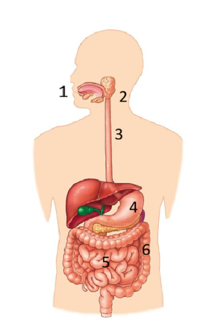
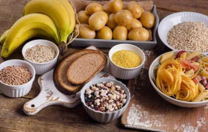
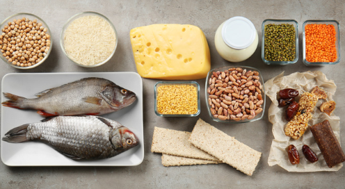
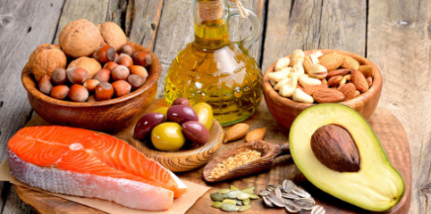

L’apparato digerente non serve solo a mangiare, ma assolve alle 4 funzioni fondamentali: l’ingestione, digestione, assorbimento dei nutrienti e l’eliminazione delle sostanze di rifiuto.
Lo scopo è ricavare dal cibo i principi nutritivi: carboidrati, lipidi, proteine, vitamine, sali minerali, acqua e trasformare queste grandi macromolecole i monomeri che il sangue possa trasportare a tutte le cellule del corpo. L’apparato digerente è essenzialmente un canale, un lungo tubo che inizia con la bocca e termina con l’ano.


La digestione dei carboidrati inizia nella bocca. Nella saliva è presente l’enzima ptialina che inizia ad attaccare l’amido trasformandolo in amilosio e amilopectina. Nel duodeno, attraverso il dotto pancreatico, il pancreas secerne il succo pancreatico contenente vari enzimi tra cui l’amilasi pancreatica. Questa continua il lavoro iniziato dalla saliva trasformando l’amilosio e l’amilopectina in zuccheri doppi: LATTOSIO, MALTOSIO e SACCAROSIO. Successivamente le cellule del duodeno producono: LATTASI, che scinde il lattosio in galattosio+glucosio; MALTASI, che scinde il maltosio in due molecole di glucosio; SACCARASI, che scinde il saccarosio in glucosio+fruttosio.

La digestione delle proteine inizia nello stomaco, dove la pepsina taglia le proteine in oligopeptidi. Nel succo pancreatico gli enzimi TRIPSINA e CHIMOTRIPSINA continuano a sminuzzare le catene proteiche trasformandole in dipeptidi. Per liberare i singoli amminoacidi intervengono 3 enzimi: CARBOSSI PEPTIDASI, stacca gli amminoacidi uno alla volta partendo dall’estremità con il gruppo carbossilico libero; AMMINO PEPTIDASI, fa lo stesso partendo dal gruppo amminico libero; DIPEPTIDASI, spezza il legame peptidico tra i dipeptidi.

La digestione dei lipidi inizia nel duodeno grazie all’enzima della LIPASI, che attacca i grassi, scomponendo i trigliceridi in glicerolo e acidi grassi. Tuttavia, i grassi tendono a formare grandi ammassi idrofobici, rendendo difficile il lavoro della lipasi. Interviene il fegato con la BILE, che emulsiona i grassi scindendoli in tante goccioline microscopiche, aumentando così la superficie di contatto.